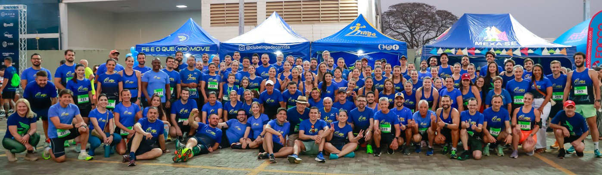

O Clube Ingá nasceu em 2014 com um propósito simples e poderoso: unir pessoas apaixonadas pela corrida. O que começou com um pequeno grupo de amigos logo se tornou uma grande comunidade, onde qualidade de vida, saúde e performance caminham juntas.
Com mais de 10 anos de experiência, crescemos e nos consolidamos como referência no cenário nacional, especialmente na preparação para provas longas. Desde o início, nossa grande diferença sempre foi a experiência no esporte. Fundado por dois atletas profissionais, o Clube Ingá entende os desafios e necessidades de cada corredor, desde quem está começando até aqueles que buscam superar seus limites em maratonas e grandes desafios.
Aqui, os corredores encontram muito mais do que treinos: formamos uma grande família. Nosso grupo é receptivo e acolhedor, onde cada conquista é comemorada e cada desafio enfrentado com o suporte de uma equipe dedicada. O diferencial mais elogiado por nossos atletas é o suporte completo nos longões de domingo, garantindo que cada passo seja dado com segurança, estratégia e motivação.
Além disso, oferecemos acompanhamento individualizado com planilhas de treino personalizadas via aplicativo e todo o suporte necessário para que nossos alunos cheguem preparados no dia da prova. Do primeiro treino à linha de chegada, nossa missão é proporcionar a melhor experiência para cada atleta.
Junte-se a nós
José Eraldo de Lima, atleta, profissional de Educação Física, gestor e fundador do Clube Ingá de Corrida. Especialista em provas de obstáculos, corridas de rua, meia maratona e maratonas. Faz parte da seleta lista dos 20 melhores do ranking brasileiro de todos os tempos. (Fonte: Confederação Brasileira Atletismo, www.cbat.org.br). Bicampeão da Mizuno Uphill Marathon e recordista brasileiro da Wings for Life Run.
Lilian Priscila Leonel de Lima, atleta, profissional de Educação Física, faz parte da seleta lista dos 20 melhores do ranking brasileiro de todos os tempos (Fonte: Confederação Brasileira de Atletismo, www.cbat.org.br).
Receba orientações presenciais para o desenvolvimento da parte técnica da corrida, aprenda seu ritmo ideal, evite lesões, participe de um grupo unido e receba sua planilha de treino com base em seus objetivos.
É de outra cidade e não consegue participar de nossos treinos presenciais? Não tem problema! Você também pode participar de nosso grupo com acompanhamento à distância, recebendo sua planilha online de treinos e recomendações.
Melhore seu corpo com exercícios funcionais, que trazem resultados estéticos e práticos para o seu dia-a-dia a curto e longo prazo. Fortalecimento muscular com o próprio peso do corpo com treinamento em grupo.